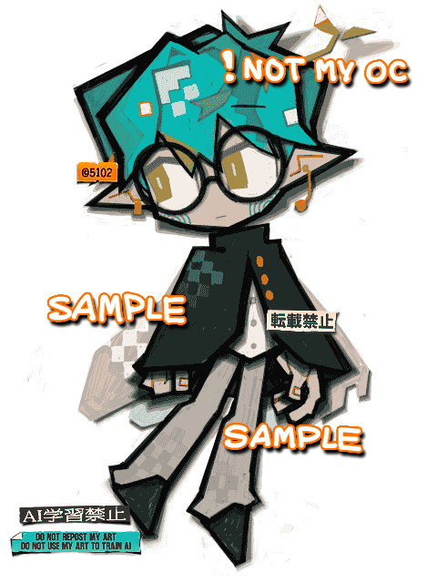
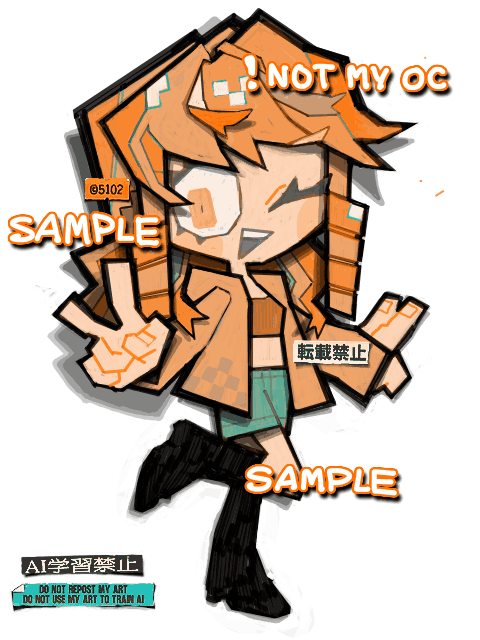

私の絵を拡大していただけるとわかりやすいのですが、最近、細部をあまり綺麗に整えすぎないように絵を描くのが楽しいです。
決して手を抜いて描いているわけではなくて、線とか色を以前より少し自由にしてあげてるんです。消し残しや塗りムラ、塗りのはみ出しなどといった、今まで絶対に許さなかったものが素朴でチープな良さを持っていることに、とうとう気づいた。
厚塗りみたいな一丁前な技法をやりたいわけではないんです。鉛筆で描いた線画をポスターカラーで塗りつぶすようなそんな感覚です。

Made with
Tegaki Editor
手書きブログで描いたもの。
こちらはアートトレードの絵で、キャラクターはGwyny氏のOCです。

こちらもアートトレードの絵で、キャラクターはAffylleon Dae氏のOCです。
2026/09/26
 お借り（Art trade）
お借り（Art trade）